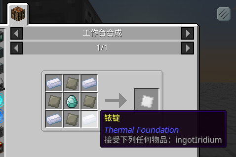

第三版客户端终于释出！
本次更新为你带来了几个实用类模组，修复了一点点 Bug 以及一些满足 YYW 私欲的东西。
更新与修复
- 修改「强化铱板」合成使之兼容 Thermal Foundation 的「铱锭」

新模组
-
添加 Akashic Tome 阿卡什宝典 1.2-12
一个十分实用的模组，用于将各个不同模组的「手册」类物品结合为一个物品。
- 添加 Morph-o-Tool 变形工具 1.2-21
还是一个十分实用的模组，和上面那个功能差不多，但是这次变成了「扳手」类物品。
- 添加 Just Enough Energistsics 1.0.7
ME 网络里面没有相应物品，所以不能用 JEI 直接填充到「样板终端？」
JEE 来帮你啦！无需物品存在也可直接填充，甚至还支持「处理类」合成？！
- 添加 Wireless Crafting Terminal 无线合成终端 3.12.93
AE 自带的无线终端不能进行 4x4 合成... 怎么办呢...
WCT 应运而生。
- 添加 Thuamic Energistics 神秘能源 2.2.3
- 添加 AE2 Stuff 0.7.0.4
- 添加 Integration Foregoing 1.9
Hope you enjoy.